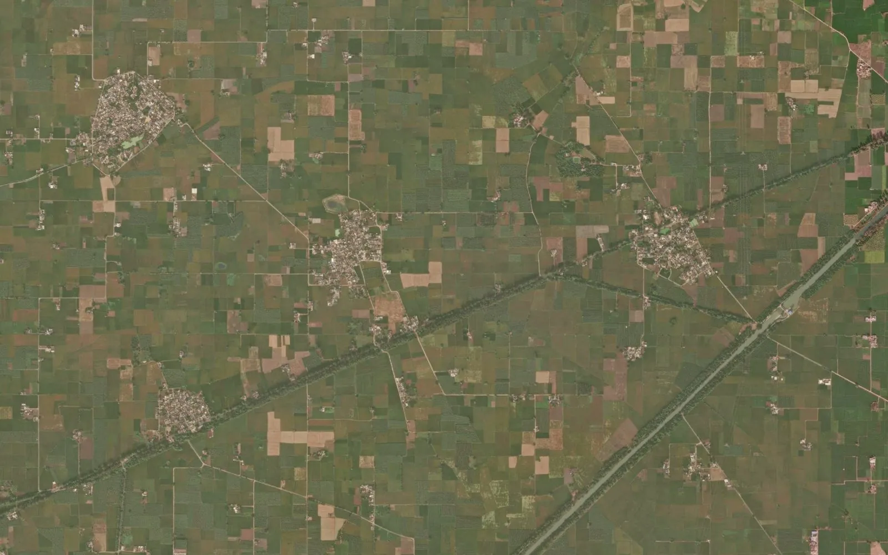

Punjab khasra map: how to read it with the jamabandi and fard

In Punjab, land is identified by the district, the tehsil, the village (with its hadbast number) and the khasra number. The village map shows where each khasra lies, while the written records, mainly the jamabandi and the fard, say who holds it, how large it is and what kind of land it is. This guide explains how the map and the records fit together and what is needed when the khasra numbers must be seen on a satellite image or used in a GIS or CAD file.
1. Where the map and the record come from
Punjab land records are kept by the state Revenue Department. Revenue work runs through the district, the tehsil and the village, and each revenue village has a hadbast number. The revenue office is the right place to start for any khasra number, and its record is what counts in a transaction.
2. The terms you will meet
- Hadbast number: the number of the revenue village, used to separate villages with the same or similar names.
- Khasra number: the number of one field or parcel in the village.
- Khewat and khatauni: the holding number of an owner or group of co-owners, and the account of what each one cultivates.
- Jamabandi: the periodic register of rights listing owners, khasra numbers, area and land type; it is renewed every few years.
- Fard: the certified copy of the entry for a holding, used for loans, sales and other formal work.
- Murabba and killa: the old rectangular grid in which many Punjab villages were laid out, with one murabba divided into killas.
- Shajra: the village map drawn on cloth or paper, showing the khasra boundaries.
3. Reading the village map
Many Punjab villages were laid out in a regular grid of murabbas, and the khasra numbers follow that grid, so parcels often look like neat rectangles. Where the land was divided later, the sub-divisions are not always drawn on the older map. Roads, canals, drains and the village boundary appear on the map, but new roads and bypasses often do not. A khasra on the map may therefore stand for more than one holding on the ground.
4. Linking the map to the jamabandi and fard
Take the khasra number from the map, choose the same district, tehsil and village (check the hadbast number) in the land record, and search by khasra number. The record gives the area, the land type and the owners of that khasra. Changes after a sale, gift or inheritance come through mutation, so read the latest record and check for pending entries where a decision depends on it.
5. Area: kanal and marla
Punjab records give area in bigha-style local units, most often kanal and marla, written as a figure such as 4K-7M. One kanal is 20 marla, one marla is about 25.3 square metres and one acre is 8 kanal. Copying 4K-7M into a spreadsheet as 4.7 is a common mistake; convert from the recorded kanal and marla and state the conversion in any land schedule.
6. Government and common land
The record also shows land kept for common use, such as the village common land (shamlat), tanks, roads and burial grounds, and land held by government bodies. These classes are written in the record and not on the map, so the map alone cannot tell you which khasra numbers are government or common land. Read the current record of each khasra number and take advice from a revenue professional before relying on it.
7. Why a viewer map is not yet a GIS map
A map on a screen is good for finding a khasra number, but it is not a file you can open with GPS points or a project layout. For that, the map must be georeferenced, meaning fitted to real coordinates such as WGS 84 latitude / longitude or UTM zone 43N metres, and every khasra digitized as a closed polygon carrying its number. The result should then be checked on satellite imagery: field bunds, roads and canal edges seen from above should sit on the khasra lines across the whole village. A map placed from one or two points only can sit tens of metres off, which matters for a plant boundary or a line route.
8. Common uses
- Seeing a khasra number on a satellite image in Google Earth
- Listing the khasra numbers inside a proposed solar plant, warehouse or industrial site
- Listing the khasra numbers crossed by a road, canal, pipeline or power line route
- Preparing a khasra-wise land schedule with village, khasra number, area in kanal and marla, and land type
9. Limits to keep in mind
The village map shows the khasra as drawn, and the ground has often changed since: new sub-divisions, roads, house plots and pond edges. The maps of neighbouring villages do not always agree exactly along their shared edge. A digitized map is a planning base, not proof of title. The revenue record remains the legal source, and where a line decides ownership or compensation, a DGPS or Total Station survey on the ground is the next step.
10. What we deliver
We turn the Punjab village map into a georeferenced GIS file: every khasra as a numbered polygon, checked against satellite imagery, with the village boundary inside the same files, in KML for Google Earth, DWG / DXF for AutoCAD, SHP for QGIS or ArcGIS and an Excel list of khasra numbers and areas. BHU-NETRA Map Service is a private service and is not connected with any state government.
See the Punjab khasra map page, check your village with the village checker, read the Haryana murabba and killa guide and land-record terms of each state, or ask for a quotation.
Need khasra maps or a survey?
Georeferenced and digitized khasra maps in KML, DWG, SHP and Excel for 20 states, plus DGPS, Total Station, topographic and drone surveys. Single village orders welcome.